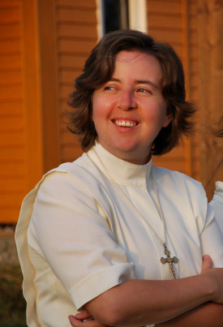

Juana poznala od osemnástky (sr.Mária Marthe)
Sestra Mária Marthe má za sebou už niekoľko úspešných školských divadelných hier. Ale hra, ktorú priviedla na svetlo sveta tento raz a to, čo sa jej podarilo zo študentov vykresať, je neuveriteľné. Juan de Dios nechal stáť v úžase nejedného diváka. Pozrime sa na svet režisérky zbližšia.Sestra Mária Marthe, čo vám dal Juan de Dios?
V skratke sa to asi ani nedá povedať. Pozerám spať na tie dlhé mesiace, kedy sa najskôr tvorila hra na papieri, potom v malej telocvični. Pamätám sa veľmi dobre na castingy a nesmelých študentov. Potom prišli prvé „oťukávačky“, zábava, ale aj drina, prebdené noci, radikálne úpravy hry, no i zvláštny pocit z toho, že sme pred dvoma rokmi zdvihli latku, a preto ju nesmieme teraz podliezť. Bolo potrebné pripraviť sa na úspešný skok do výšky, ktorá nebola priamo určená. Keďže sa od poslednej hry zmenil tím účinkujúcich skoro kompletne, znamenalo to pre mňa začať celkom od nuly, a neostať pri nej. Bola to výzva. Juan de Dios priniesol so sebou veľa nečakaných situácii, radosti a nadšenia, ale i zopár vrások a šedivých vlasov. Spolu s touto hrou som vstúpila do školy, kde som sa každodenne mala učiť dôverovať, prekonávať, byť optimistom, aj keď realita navádzala na pesimizmus. Zdolávať skúšky, a to nemyslím len tie divadelné. Nečakať na prestávky, ale hneď sa popasovať s každou úlohou. Zúčastňovať sa výletov do neznáma, hoci by som radšej kráčala po známej vychodenej cestičke. Odovzdať čo najjasnejšie myšlienku hry tým, ktorí budú stať na javisku a zároveň prosiť nebo o priazeň. Juan de Dios ma naučil, že Boh dokáže aj divadlom otvárať ľudské srdcia a meniť nás k lepšiemu.
Prečo práve Juan de Dios?Sv. Juan de Dios mi bol veľmi sympatický. Nespĺňal žiadne naše veľakrát mylné predstavy o svätých a dokonalých ľuďoch. Nebol to hrdina – superman, ani krásavec, ktorého si človek hneď všimne. Nebol ani bohatý a ani učený. V živote si prešiel mnohými skúškami. Roky nevidel zmysel svojho života. V ľudských očiach bol nula, dokonca blázon. Ešte aj žobráci si mysleli, že sú na tom lepšie ako on. Vraj toto má byť hlavná postava, ktorej divák chce fandiť? Vravím si: „Áno! Veď nerobíme divadlo pre americkú produkciu, kde sú dovolení len dokonali superhrdinovia. Juan je jeden z nás. V jeho príbehu sú skryté aj tie naše.“ V čom sa však Juan od nás dosť odlišuje, čo má a my nie, je jeho veľká dôvera v nekonečné Božie milosrdenstvo a absolútna sloboda ísť proti prúdu za spoznanou pravdou, nech to stojí, čo to stojí, a nestráca pri tom lásku.
Kedy ste sa prvýkrát stretli so životným príbehom Jána z Boha?Keď som mala osemnásť, dostala sa mi do ruky kniha o jeho živote. Bol to román, pútavo písaný a ešte k tomu v nemčine. (Nemčinu som milovala.) Prečítala som ho za tri dni. Vtedy som si pomyslela: „Tak toto by bol námet na film alebo divadlo.“ Dnes sú filmy častokrát bez príbehu, nemajú divákovi čo ponúknuť. Toto bol veľmi silný príbeh, dokonca pravdivý, žiadna fikcia. To, že raz budem písať scenár Juan de Dios- Boží blázon by mi vtedy ani len vo sne nenapadlo. Netušila som, že raz budem pracovať s mladými ľuďmi a stáť s nimi na divadelných doskách. Moje plány boli celkom iné. Človek mieni, no Pán Boh mení.
Ako sa rodí divadelný scenár?Vždy inak. Juan sa začal na jednej svadbe, keď sa vydávala naša bývala študentka Zuzka Štefánková. Sobáš bol v kláštornom kostole. Myslím, že to bolo v máji pred rokom. Vraj to bola veľmi pekná svätá omša. Ja som však bola mimo reality. V mysli sa tam predo mnou zrazu začali vynárať scény z hry. Je to akoby ste videli film na takom zvláštnom čiernom pozadí. Stačí si ho len zapamätať, potom zachytiť na papier a aktérom vložiť do úst slová, aby film nezostal nemý. Po sobáši vravím sestrám: „Osvietilo ma! Bude hra! Videla som ju!“
Videli ste ju celú?Nie, len niektoré časti. Videla som najskôr scénu, v ktorej tajomná pastierka (Panna Mária) vychádza z lesa a zachraňuje zraneného Juana. Už bolo treba len nájsť tých dvoch, ktorí to v mojej mysli na tej svadbe tak výborne hrali a ktorých som tak jasne videla, hoci sa nič nepremietalo. Aspoň to tvrdili svadobčania. Ja si z tej svadby nič nepamätám.
Podľa čoho ste si vyberali hlavnú postavu?Tak, ako som tu opísala sv. Juana de Dios je asi všetkým jasné, že nájsť niekoho, kto mu bude vnútorne podobný, nebude ľahká záležitosť. A ani nebola. Bolo viac než veľkou výzvou zahrať nadšeného zasnívaného mladíka; padlého vojaka; zúfalca; hľadajúceho zrelého muža, ktorý bojuje sám so sebou; blázna, ale aj pokojného rehoľníka, ktorý pozná pády i vstávania; svedka milosrdnej lásky; muža, ktorý odpúšťa, čo sa ľudsky odpustiť nedá. Dlho som nevedela, kto bude hrať Juana. V duchu som sa pýtala: „Ako bude môcť zahrať tak náročnú úlohu sedemnásťročný/ osemnásťročný študent, ktorý si v živote ešte skoro nič neprežil?“ Prišli aj ťažké chvíle, kedy som si myslela, že som napísala hru, ktorú nebude mať kto hrať. V škole sme síce mali šikovných chalanov, ktorí majú aj nejaké tie divadelné skúsenosti, no šikovnosť a skúsenosti, keď som sa tak na postavu Juana de Dios pozerala, tu nestačili. Nebolo mi všetko jedno, keď sa blížili Vianoce a ja som ešte stále nemala hlavnú postavu. Nakoniec sa z hmly vynoril Juraj Vontorčík. Tá hmla bola poriadne hustá.
 Vraví sa, že každá vaša hra má nejaký symbol. Aký mala hra Boží blázon?Asi to bude znieť dosť nečakane, ale jednoznačným symbolom tejto hry boli VLASY. Davidko, ktorý hral malého Juana, sa nesmel na nožnice ani len pozrieť. Je to športovec, má rád krátke vlasy. No a veľký Juan je skôr umelec. Tu sme mali opačný problém, vlasy potrebovali radikálny jarný strih. No nielen Juan išiel pod nožnice. Viacerí mali poriadnu hrivu, ani sme im do tváre nevideli. Vravím im: „Keď už hráte, nech je aj vidieť ako sa tvárite.“ Nebolo času na dlhé prehováranie. Jedného dňa som zavolala na nácvik našu kamarátku, kaderníčku Martinku. Oznámila som, že ten, na koho ukážem prstom, sa pôjde dať ostrihať. A bolo vybavené. Celý večer sme strihali.
Išli všetci dobrovoľne?Nemali na výber, ale ani nešomrali. Išla som aj ja a sr. Mária Zuzana, treba ísť predsa príkladom. A tak sa stali vlasy symbolom Božieho blázna. Pani profesorke Jenisovej sa táto rýchla akcia s nožnicami veľmi páčila. Neviem, či aj jej synovi. Prežil to aj veľký Juan, hoci ten to znášal asi najhoršie. Z času na čas mi pripomenul, aká krivda bola na ňom spáchaná. Určite to spomenie aj v jeho rozhovore pre časopis. Chcel si nechať dlhé vlasy a Juan de Dios mu zrazu zmaril plány... či vlastne režisér?
Kto vás herecky prekvapil na castingu alebo neskôr na skúškach?Na castingu jednoznačne Juraj Daniš, náš potulný spevák Antonio Melro. Poznala som ho len zvidenia. Prišiel, vzal do ruky neznáme texty a čítal ich, ako keby ich doma študoval celú noc. Mal krásny jasný hlas, prirodzený prejav, správny šmrnc. Dostal úlohu zahrať slobodného umelca, ktorý ospevuje krásu betónového sídliska. Postavil sa na zelenú debničku a začal recitovať s humorným pátosom o Klokočine, dokonca vo veršoch. Vravím si: „Tak toto tu ešte nebolo a asi ani už nebude!“ Úplne mi aj sestre Márii Zuzane zdvihol náladu.
Nechceli ste, aby hral hlavnú postavu práve on?Je dôležité nájsť na každú postavu z hry ten správny typ človeka. Juraj Daniš bol jasný slobodný umelec. Mal všetko, čo by mal Antonio Melro mať. Juraj Vontorčík mal zase vnútornú charizmu, ktorú potrebovala postava Juana, bol aj dosť iný ako zvyšok osadenstva, a to skoro vo všetkom. Mal s Juanom veľa spoločného. Videla som v ňom veľký potenciál, ktorý bolo treba čo najlepšie využiť. Myslím, že sa nám to podarilo.
S ktorými postavami sa najľahšie nacvičovalo a s ktorými ste sa naopak najviac natrápili?Najľahšie nácviky boli s malým Juanom Davidom Sedmákom. Je to prirodzený herecký talent. Rýchlo pochopil, čo má robiť, ako hrať. Bol na každom nácviku a bolo jedno, či sme hrali v hudobnej miestnosti na internáte, alebo v telocvični, vždy išiel naplno. Nemusela som mu predčítavať text, aby počul ako má intonačne a výrazovo pracovať s hlasom. Stačilo povedať napr.: „Túto vetu povedz prekvapene.“ A on to tak povedal. Okrem toho vedel už po prvom týždni všetky texty naspamäť a radil aj ostatným, keď textovo vypadli. Veľa sme sa spolu nasmiali.
Najnáročnejšie to bolo so scénami Vojna a Granada.
Scény, kde má byť v popredí akcia, dynamika, silný výraz a veľké množstvo ľudí, kde každý robí niečo iné, sú vždy najťažšie. Predstavte si k tomu 12 uletených GCMákov mužského rodu, ktorí po vyučovaní dostanú meče do ruky a majú seriózne nacvičovať vojnu. Alebo si predstavte kopec takzvaných Granaďanov, ktorí majú zrozumiteľne kričať jeden cez druhého až sa nakoniec nebude dať povedať, či sa zbláznil Juan, oni všetci alebo režisérka... Z hercov si najviac energie vyžiadala hlavná postava Juan, ale to je prirodzené. Mal najťažšiu úlohu, bol kľúčovou postavou. Každá scéna, v ktorej hral, si vyžadovala celkom iného Juana, ako som už spomínala. Do hlavnej postavy treba investovať najviac, pretože ak sa spraví aj dobrá hra a hlavná postava zrazu nie je hlavná, trpí tým celá hra. Jurko Vontorčík tou hlavnou postavou rozhodne bol.
Najoriginálnejšie nácviky?S trubadúrom Adamom. Len on a ja. Vedel, že hrá jednu z hlavných postáv už od leta. Vedel, že bude hrať, veršovať, tancovať a hlavne spievať. Veľmi sa tešil, kedy sa to všetko začne. Nacvičovalo sa už zopár týždňov a Adam sa pýta: „Sestrička a my dvaja kedy začíname nacvičovať?“
Ja : „Dám ti vedieť, ty si samostatná jednotka. Nestíham, Adamko, a nemám pre teba ani hudbu. Neboj, ozvem sa ti.“
Adam: „Dobre, dobre, čakám.“ Tento náš rozhovor sa opakoval v pravidelných intervaloch. Čas bežal, dokonca už aj hudba prišla.
Adam: „Tak ako, sestra Mária Marthe, dáme si dnes nácvik?“
Ja: „Jasné, Adamko, ozvem sa ti. Teraz nestíham.“
Adam: „A kedy?“
Ja: „Niekedy večer. Zavolám ti.“
Adam: „Dobre, dobre, sestrička.“
Prišiel večer aj migréna a ja som, samozrejme, úplne zabudla na Adama. Zrazu zvoní telefón.
Adam: „Tak ako, sestrička? Kedy prídete na internát?“
Ja:
„Adamko, dnes neprídem, strašne ma bolí hlava, ale zajtra stopercentne.“
Tento náš rozhovor sa zopakoval viackrát. Keď už začal tlačiť čas, prišla intenzívna chvíľa nácvikov o pol desiatej večer v malej telocvični- len ja a trubadúr. Celkom pekne to zvládol. Niektorí diváci si mysleli, že sme si ho požičali z konzervatória.
Aká bola vaša najobľúbenejšia scéna?Pád - Záchrana. Bola to pre mňa silná scéna. Juan ju hral veľmi presvedčivo. Videla som v ňom naozaj muža prosiaceho o záchranu. Do textu som vložila tak trochu aj moje prežívanie, o to to bolo pre mňa silnejšie.
Ste zohratý sesterský divadelný tím už niekoľko rokov. Boli medzi vami aj nejaké názorové roztržky v zákulisí?Roztržky nie, rozdielne predstavy áno. Napr. ja som chcela, aby bol Juan vždy oblečený chudobne, hovorím tomu v „zašmudlanej“ špinavej látke. Všetkých okrem Granaďanov a seňora Francesca (Paťa Reža) s manželkou (Helou Molnárovou) som chcela mať „ušmudlaných“, pretože išlo o príbeh jednoduchých chudobných ľudí zo 16.storočia. No to sa sestrám nepozdávalo. Vraj Juan musí byť pekný a hlavne pri Beatriz nesmie vyzerať ako chudobný príbuzný. Musia tvoriť krásny pár. Ustúpila som. Výhrady sa týkali aj Juanovho plazenia sa v scéne Záchrana, celý čas sa tam totiž plazil po tom špinavom baletizole. Tu som nechcela ustúpiť. Radšej som pred každým nácvikom umývala podlahu. A ani som neustúpila. Juan sa plazil celý čas. Chudák, mal z toho aj modriny.
Neodmysliteľnou súčasťou hry je tanec a výborná hudba. Ako vnímate tieto dve zložky?Bez toho si naše divadlo ani neviem predstaviť. Máme šikovných choreografov. Každý jeden tanec bol skvelý, pretože mal myšlienku a výborných tanečníkov, ktorí ma svojimi výkonmi veľmi milo prekvapili.
Mali ste predstavu o tancoch alebo ste to nechali celkom na choreografov?Čo sa týka jednotlivých tanečných prvkov, to je jasná záležitosť choreografov. Ja som mala predstavu, čo má tanec znázorňovať, pretože aj tanec ma svoj príbeh. Jeho úlohou je umocniť hraný dej. Napríklad „v čiernych myšlienkach“ som chcela, aby sa okolo Juana vytvorila nejaká sieť alebo pavučina, do ktorej sa chytil a nemôže vyjsť von. Beba s Ľubom sa na tom dobre potrápili. Oplatilo sa.
A čo pesničky?Sestry skladateľky a hudobníčky opäť nesklamali. Mohla som sa na ne stopercentne spoľahnúť. Granadu napísal náš páter Luis Caudt, odchovanec GCM. Bola to prvá pesnička hry, ktorú som si našla v e-mailovej schránke. Hneď sa mi dostala do uší. Vedela som, že to bude hitovka. A bola. Otčenáš ma dojal asi na každom predstavení. Z Dankinho spevu v scéne Záchrana som mala zimomriavky. A pieseň Boží blázon som si v duchu spievala spolu s Juanom. Raz dokonca aj nahlas, ale to som bola s osvetľovačmi za hrubým sklom. A verte mi, nebola som sama. Tešila som sa aj na hudobnú produkciu trubadúrskych vstupov. Texty som písala ja. Bola som zvedavá, ako budú znotované.
Scéna bola výtvarne spravená na profesionálnej úrovni. Komu za to vďačíme?Navrhoval ju profesionálny scénograf, zaslúžilý umelec a náš priateľ František Perger, ktorý viac ako 30 rokov pracoval v Divadle Andreja Bagara. Vážim si ho. Je to muž na správnom mieste, detailista, výtvarník. Mal výborné scénické nápady. O divadle som sa naučila veľa práve od neho.
Splnila hra vaše očakávania?Očakávania majú diváci, režisér víziu. Tá bola jasná, aj keď realizácia niekedy vyzerala ako boj s veternými mlynmi. Niečo sa podarilo tak, ako som chcela, niečo ma dokonca milo prekvapilo, niečoho som sa musela vzdať v prospech hry.
Máte už nejaké plány do budúcnosti?Plány sú, no zatiaľ nechcem nič konkretizovať. Nechám sa viesť a inšpirovať nebom. Tam sa vie najlepšie čo, kedy, ako a s kým.
Odkaz pre študentov:Nech vás radosť z nášho spoločného diela Juan de Dios- Boží blázon hreje na duši čo najdlhšie, aspoň pokým sa nestretneme na castingu o dva roky...možno aj skôr.
A nezabudnite, že
aj keď slnko za mraky zájde,
kto hľadá Božiu pravdu nájde
a ten, kto prosí, dostane
priehrštím a nielen do dlane!